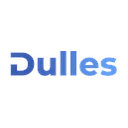
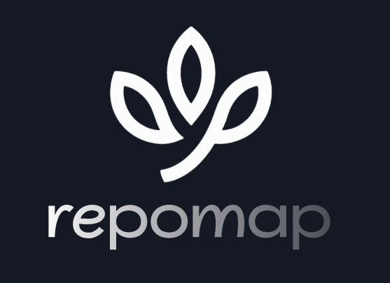

Hello there, I'm
Asif 👋
Technical Product Manager
AI Product Strategist with a foundation in software development. I turn business needs into clear technical requirements, then prototype fast to prove them out.
How I Work
- Discover(analysis)
- Prototype(speed)
- Ship(impact)
Case Studies
12 projects-
Merlin
A realtime voice agent that qualifies inbound prospects in the browser, then books the briefing or captures the brief.
-
ZeroTouch Onboarding
Client onboarding for an Australian accounting firm, built against a hard AML/CTF compliance deadline.
-
Socratic AI Tutor
The proof of concept for ilm AI — a tutor that refuses to just answer, asking guiding questions until the student gets there themselves.
-
Otsukare
A Japan-focused freelance platform connecting global IT talent with Japanese firms through AI-driven matching.
-
Fabric QR Web App
Shares fabric details — images, GSM, type, references — over QR codes, killing a repetitive workflow and its errors.
-
Siratul Mustakim
A voice-first field app that tells a preacher which house to visit next, draws the route, and records the outcome.
-
Narawe
Document intelligence for professional-services firms — scan client PDFs and search them by word or by meaning.
-

Investment Workflow AutomationAn investment application that routes itself — one form submission reaches every department it needs to, and one system tracks it from received to disbursed.
-
Mofiz Marma
Talk, and Mofiz draws. A voice agent that renders live Mermaid diagrams as you describe them, in English or Bangla.
-

RepoMapPoint it at a GitHub repo or a local folder and get architecture diagrams, module notes and a generated README.
-
Git Insight
Feed it a GitHub username and it returns a card-based developer assessment written for recruiters.
-
DevMentor
An AI mock interviewer for fresh CS graduates — a real technical interview by voice, then a scored report on how it went.